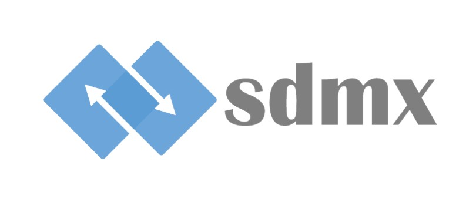

SDMX : Statistical Data and Metadata eXchange.
C’est une norme internationale développée pour l’échange de données et métadonnées statistiques.
Elle a été créée conjointement par sept organisations internationales (dont FMI, Banque mondiale, OCDE, Eurostat, ONU).
L’objectif est de faciliter le partage, l’intégration et la diffusion des données statistiques.
SDMX couvre à la fois le contenu (données et métadonnées) et le format technique d’échange.
La norme propose des formats XML et JSON standardisés pour les échanges. Elle définit également des concepts statistiques communs et des classifications harmonisées. Les structures de données dans SDMX reposent sur des Data Structure Definitions (DSD). Une DSD décrit les dimensions, mesures et attributs d’une série statistique. SDMX facilite l’automatisation des flux de données entre producteurs et utilisateurs. Elle contribue à réduire les coûts et délais de transmission de données. SDMX inclut des Web Services pour l’accès direct et la récupération des données. Elle est utilisée par de nombreuses organisations internationales et offices statistiques nationaux. La norme soutient l’interopérabilité et l’intégration dans des systèmes d’information existants. Les métadonnées sont structurées en Metadata Structure Definitions (MSD). Elle favorise la transparence et la réutilisation des données statistiques. SDMX propose un cadre commun tout en laissant une certaine flexibilité aux implémenteurs. Les versions les plus utilisées sont SDMX 2.1 et SDMX-JSON.
SDMX est un standard clé pour la modernisation et l’harmonisation de la statistique officielle.